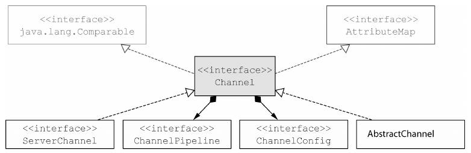
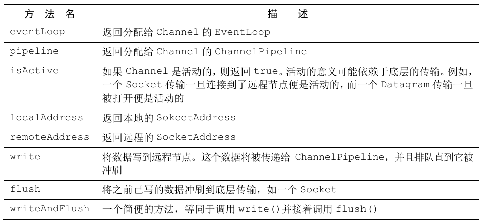
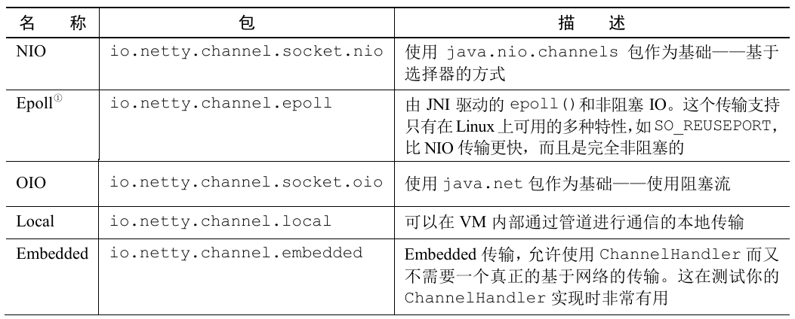
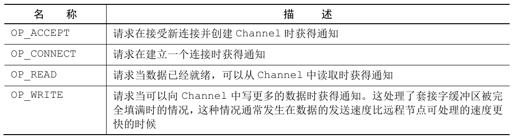
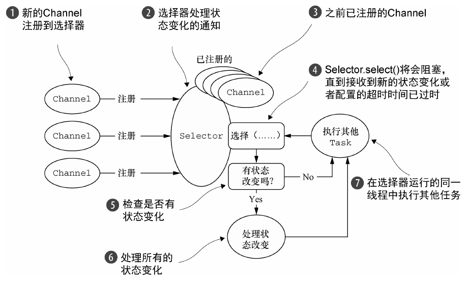
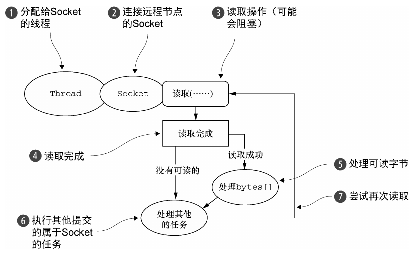
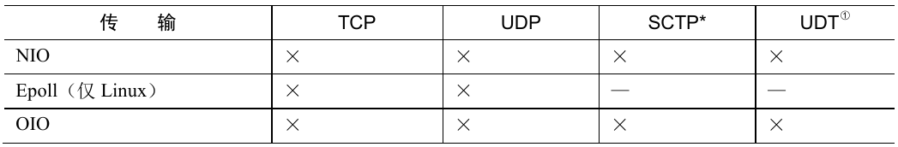
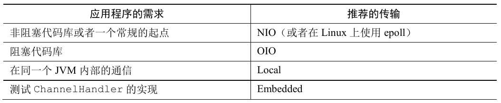

1. 第4章 传输
流经网络的数据总是具有相同的类型: 字节。
Netty 为阻塞传输和非阻塞传输提供了一个通用 API, 这使得在阻塞和非阻塞之间的转换很容易达成。所产生的代码不会被实现的细节所污染, 开发者也不需要在整个代码库上进行广泛的重构。
1.1. 案例研究:传输迁移
- 这个应用程序简单地接受连接, 向客户端写“Hi!”, 然后关闭连接。
1.1.1. 不通过 Netty 使用 OIO 和 NIO
1.1.2. 通过 Netty 使用 OIO 和 NIO
1.2. 传输 API
传输 API 的核心是接口 Channel, 它被用于所有的 I/O 操作。
Channel 类的层次结构

每个 Channel 都将会被分配一个 ChannelPipeline 和 ChannelConfig。
ChannelConfig 包含了该 Channel 的所有配置设置, 并且支持热更新。由于特定的传输可能具有独特的设置, 所以它可能会实现一个 ChannelConfig 的子类型。
由于 Channel 是独一无二的, 所以为了保证顺序将 Channel 声明为 java.lang.Comparable 的一个子接口。
- 因此, 如果两个不同的 Channel 实例都返回了相同的散列码, 那么 AbstractChannel 中的 compareTo() 方法的实现将会抛出一个 Error。
ChannelPipeline 持有所有将应用于入站和出站数据以及事件的 ChannelHandler 实例, 这些 ChannelHandler 实现了应用程序用于处理状态变化以及数据处理的逻辑。
ChannelHandler 的典型用途包括
- 将数据从一种格式转换为另一种格式;
- 提供异常的通知;
- 提供 Channel 变为活动的或者非活动的通知;
- 提供当 Channel 注册到 EventLoop 或者从 EventLoop 注销时的通知;
- 提供有关用户自定义事件的通知。
拦截过滤器：ChannelPipeline 实现了拦截过滤器(Intercepting Filter)。它类似于 UNIX 管道。
也可以根据需要通过添加或者移除 ChannelHandler 实例来修改 ChannelPipeline。通过利用 Netty 的这项能力可以构建出高度灵活的应用程序。
Channel 的常用方法

示例：写出到 Channel
Netty 的 Channel 实现是线程安全的, 因此可以存储一个 Channel 的引用, 并且每当需要向远程节点写数据时, 都可以使用它, 即使当时许多线程都在使用它。需要知晓的是, 所有的消息将会被保证按顺序发送。
1.3. 内置的传输
Netty 内置了一些可开箱即用的传输。因为并不是它们所有的传输都支持每一种协议, 所以必须选择一个和应用程序所使用的协议相容的传输。
Netty 所提供的传输

1.3.1. NIO -- 非阻塞 I/O
NIO 提供了一个所有 I/O 操作的全异步的实现。它利用了自 NIO 子系统被引入 JDK 1.4 时便可用的基于选择器的 API。
选择器背后的基本概念是充当一个注册表, 在那里将可以请求在 Channel 的状态发生变化时得到通知。可能的状态变化有:
- 新的 Channel 已被接受并且就绪;
- Channel 连接已经完成;
- Channel 有已经就绪的可供读取的数据;
- Channel 可用于写数据。
选择器运行在一个检查状态变化并对其做出相应响应的线程上, 在应用程序对状态的改变做出响应之后, 选择器将会被重置, 并将重复这个过程。
由 class java.nio.channels.SelectionKey 定义的位模式。这些位模式可以组合起来定义一组应用程序正在请求通知的状态变化集。

- 对于所有 Netty 的传输实现都共有的用户级别 API 完全地隐藏了这些 NIO 的内部细节。

零拷贝(zero-copy)是一种目前只有在使用 NIO 和 Epoll 传输时才可使用的特性。
使用零拷贝可以快速而高效地将数据从文件系统移动到网络接口, 而不需要将其从内核空间复制到用户空间, 其在一些协议中可以显著地提升性能。
并不是所有的操作系统都支持零拷贝。特别地, 零拷贝对于实现了数据加密或者压缩的文件系统是不可用的(只能传输文件的原始内容)。反过来说, 传输已被加密的文件则不是问题。
1.3.2. Epoll -- 用于 Linux 的本地非阻塞传输
Netty 的 NIO 传输基于 Java 提供的异步/非阻塞网络编程的通用抽象。
Linux 中的 epoll
- 一个高度可扩展的 I/O 事件通知特性。
- epoll API 自 Linux 内核版本 2.5.44(2002) 被引入, 提供了比旧的 POSIX select 和 poll 系统调用更好的性能。
- 也是 Linux 上非阻塞网络编程的事实标准。
- Linux JDK NIO API 使用了这些 epoll 调用。
Netty 为 Linux 提供了一组 NIO API, 其以一种和它本身的设计更加一致的方式使用 epoll, 并且以一种更加轻量的方式使用中断。
如果应用程序旨在运行于 Linux 系统, 那么请考虑利用这个版本的传输。在高负载下它的性能要优于 JDK 的 NIO 实现。
如果要在代码中使用 epoll 替代 NIO, 只需要将 NioEventLoopGroup 替换为 EpollEventLoopGroup, 并且将 NioServerSocketChannel.class 替换为 EpollServerSocketChannel.class 即可。
1.3.3. OIO -- 旧的阻塞 I/O
Netty 的 OIO 传输实现代表了一种折中: 它可以通过常规的传输 API 使用, 但是由于它是建立在 java.net 包的阻塞实现之上的, 所以它不是异步的。
OIO 非常适合于某些用途。
- 需要移植使用了一些进行阻塞调用的库的遗留代码, 而将逻辑转换为非阻塞的可能是不切实际的。相反, 可以在短期内使用 Netty 的 OIO 传输, 然后再将代码移植到纯粹的异步传输上。
Netty 是如何能够使用和用于异步传输相同的 API 来支持 OIO 的呢？
- Netty 利用了 SO_TIMEOUT 这个 Socket 标志, 它指定了等待一个 I/O 操作完成的最大毫秒数。
- 如果操作在指定的时间间隔内没有完成, 则将会抛出一个 SocketTimeout Exception。Netty 将捕获这个异常并继续处理循环。
- 在 EventLoop 下一次运行时, 它将再次尝试。
- 这实际上是类似于 Netty 这样的异步框架能够支持 OIO 的唯一方式。
OIO 的处理逻辑

1.3.4. 用于 JVM 内部通信的 Local 传输
Netty 提供了一个 Local 传输, 用于在同一个 JVM 中运行的客户端和服务器程序之间的异步通信。同样, 这个传输也支持对于所有 Netty 传输实现都共同的 API。
在这个传输中, 和服务器 Channel 相关联的 SocketAddress 并没有绑定物理网络地址; 相反, 只要服务器还在运行, 它就会被存储在注册表里, 并在 Channel 关闭时注销。
因为这个传输并不接受真正的网络流量, 所以它并不能够和其他传输实现进行互操作。因此, 客户端希望连接到(在同一个 JVM 中)使用了这个传输的服务器端时也必须使用它。除了这个限制, 它的使用方式和其他的传输一模一样。
1.3.5. Embedded 传输
Netty 提供了一种额外的传输, 使得开发者可以将一组 ChannelHandler 作为帮助器类嵌入到其他的 ChannelHandler 内部。
通过这种方式, 可以扩展一个 ChannelHandler 的功能, 而又不需要修改其内部代码。
Embedded 传输的关键是一个被称为 EmbeddedChannel 的具体的 Channel实现。
1.4. 传输的用例
- 支持的传输和网络协议

虽然只有 SCTP 传输有这些特殊要求, 但是其他传输可能也有它们自己的配置选项需要考虑。
如果只是为了支持更高的并发连接数, 服务器平台可能需要配置得和客户端不一样。
1.4.1. 可能会遇到的用例
非阻塞代码库
- 如果代码库中没有阻塞调用(或者能限制它们的范围), 那么在 Linux 上使用 NIO 或者 epoll 始终是个好主意。
- 虽然 NIO/epoll 旨在处理大量的并发连接, 但是在处理较小数目的并发连接时, 它也能很好地工作, 尤其是考虑到它在连接之间共享线程的方式。
阻塞代码库
- 如果代码库严重地依赖于阻塞 I/O, 而且应用程序也有一个相应的设计, 那么在尝试将其直接转换为 Netty 的 NIO 传输时, 可能会遇到和阻塞操作相关的问题。
- 不要为此重写代码, 可以考虑分阶段迁移: 先从 OIO 开始, 等代码修改好之后, 再迁移到 NIO(或者使用 epoll, 如果使用 Linux)。
在同一个 JVM 内部的通信
- 在同一个 JVM 内部的通信, 不需要通过网络暴露服务, 是 Local 传输的完美用例。
- 这将消除所有真实网络操作的开销, 同时仍然使用你的 Netty 代码库。
- 如果随后需要通过网络暴露服务, 那么只需要把传输改为 NIO 或者 OIO 即可。
测试 ChannelHandler 实现
- 如果想要为自己的 ChannelHandler 实现编写单元测试, 那么请考虑使用 Embedded 传输。
- 这既便于测试代码, 而又不需要创建大量的模拟(mock)对象。
- 这个类将仍然符合常规的 API 事件流, 保证该 ChannelHandler 在和真实的传输一起使用时能够正确地工作。
应用程序的最佳传输
